01 · Concept
띠의 색이 그해의 색
띠 이름 앞 글자(갑·을·병)는 색을 함께 품고 있습니다. 갑과 을은 푸른색, 병은 붉은색에 해당해 2024·2025년은 푸른 계열, 2026년은 붉은 계열을 메인으로 삼았습니다.
청룡
푸른 용의 해. 하늘색 청룡과 연둣빛 아기 청룡, 짙은 녹색 산을 중심으로 구성했습니다.
푸른 뱀
푸른 뱀의 해. 남색 뱀과 겹겹이 이어지는 푸른 산으로 차분한 톤을 잡았습니다.
붉은 말
붉은 말의 해. 테라코타 바탕에 베이지 선과 짙은 녹색으로 단청의 인상을 냈습니다.
02 · Year by Year
세 해, 세 가지 표정
같은 새해 인사를 해마다 캐릭터형, 풍경형, 전통 문양형으로 다르게 풀었습니다. 카드를 끌어 넘기면 그해의 구성과 색이 함께 바뀝니다.
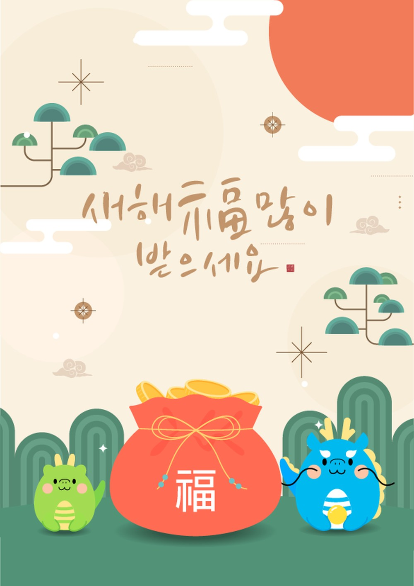
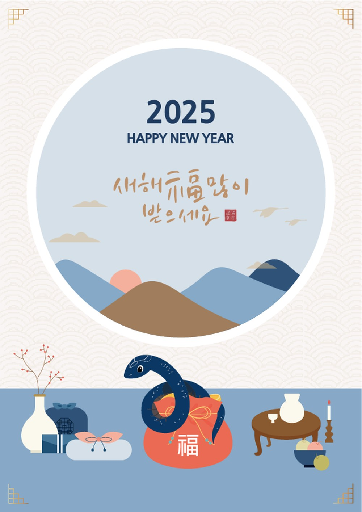
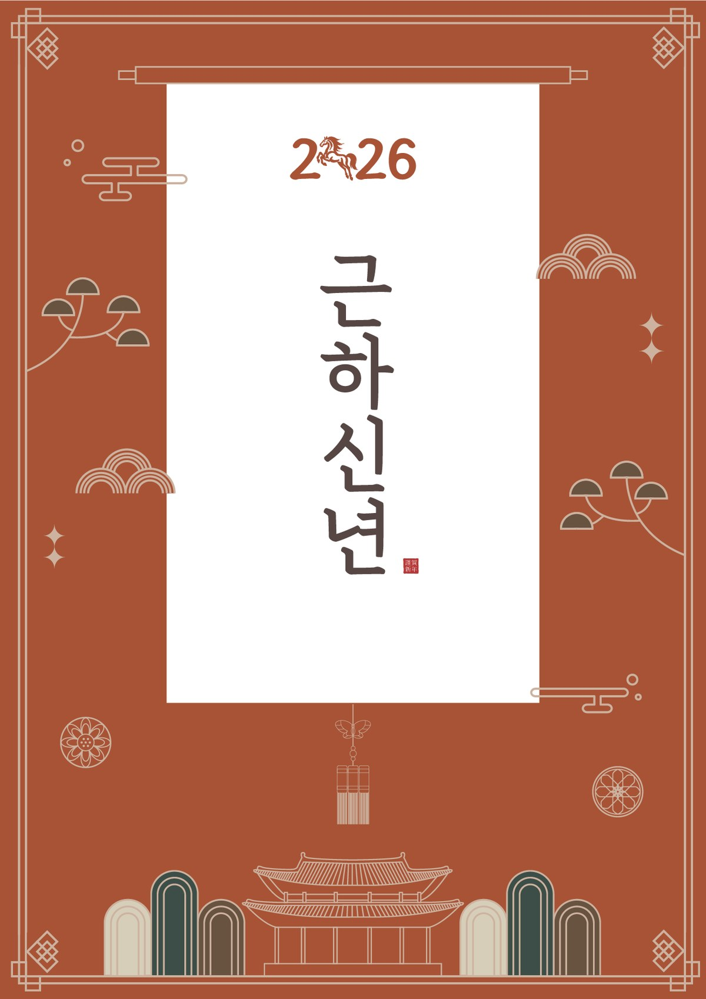
복주머니 곁의 두 용
직접 그린 청룡과 아기 청룡을 복주머니 양옆에 세워 친근한 장면으로 만들었습니다. 둥근 몸과 발그레한 볼로 거래처에 가볍고 밝은 첫인사를 건넸습니다.
- 캐릭터형
- 손글씨 레터링
- 해 · 구름 · 소나무
둥근 창 너머의 설날
둥근 창 너머 산 풍경과 설 차례상을 한 장면에 담았습니다. 직접 그린 푸른 뱀이 복주머니를 감싸 안으며 한 해의 복을 지키는 이야기를 만들었습니다.
- 풍경형
- 차례상 소품
- 물결 문양 배경
족자에 걸린 근하신년
족자 형식에 단청 문양과 궁궐 실루엣을 더해 격식을 갖췄습니다. 2026의 0 자리에 직접 그린 붉은 말을 넣어 숫자만 봐도 그해를 알 수 있게 했습니다.
- 전통 문양형
- 세로쓰기 타이포
- 낙관 도장
03 · Characters
직접 그린 그해의 주인공
띠 동물은 매년 새로 그렸습니다. 같은 띠라도 그해 연하장의 분위기에 맞는 성격을 먼저 정하고, 그 성격이 드러나도록 형태와 표정을 다듬었습니다.
04 · Recurring
세 해를 잇는 요소들
소나무, 구름, 복주머니, 손글씨, 낙관은 해마다 형태와 색만 바꿔 다시 등장합니다. 매년 디자인이 달라져도 같은 회사가 보낸 연하장으로 이어지게 하는 장치입니다.
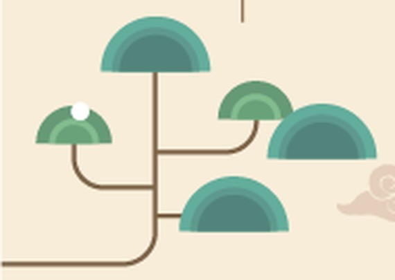
반원 소나무 2024
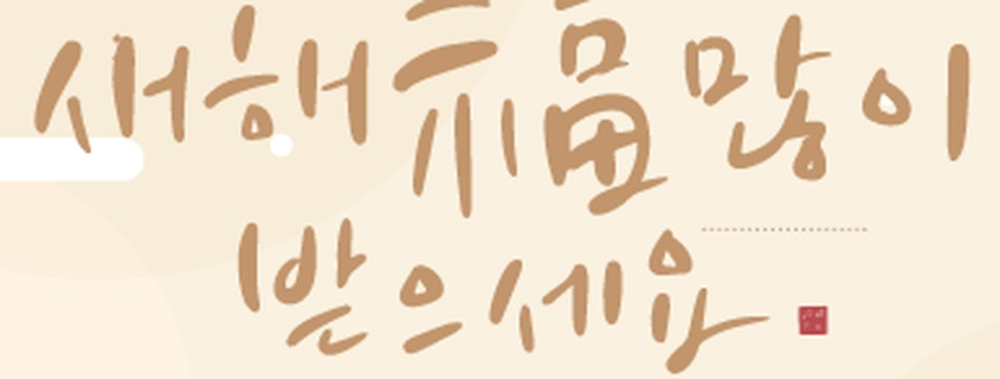
새해 福 레터링 2024
복주머니 2024
겹산 풍경 2025
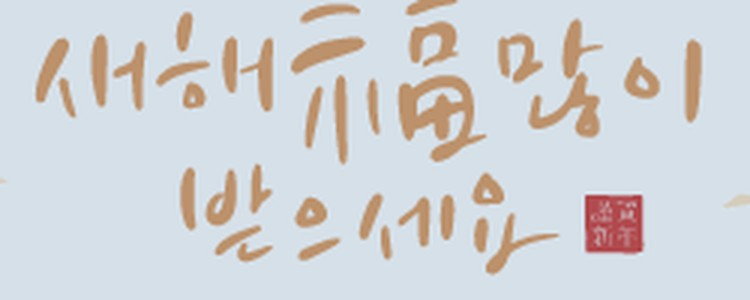
새해 福 레터링 2025
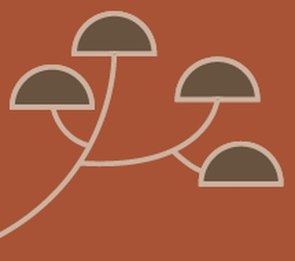
반원 소나무 2026
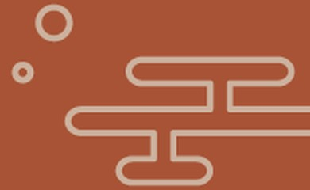
구름 문양 2026
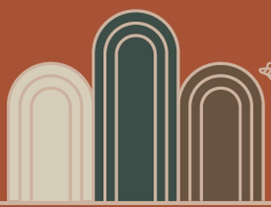
아치형 산 2026
낙관 도장 2026
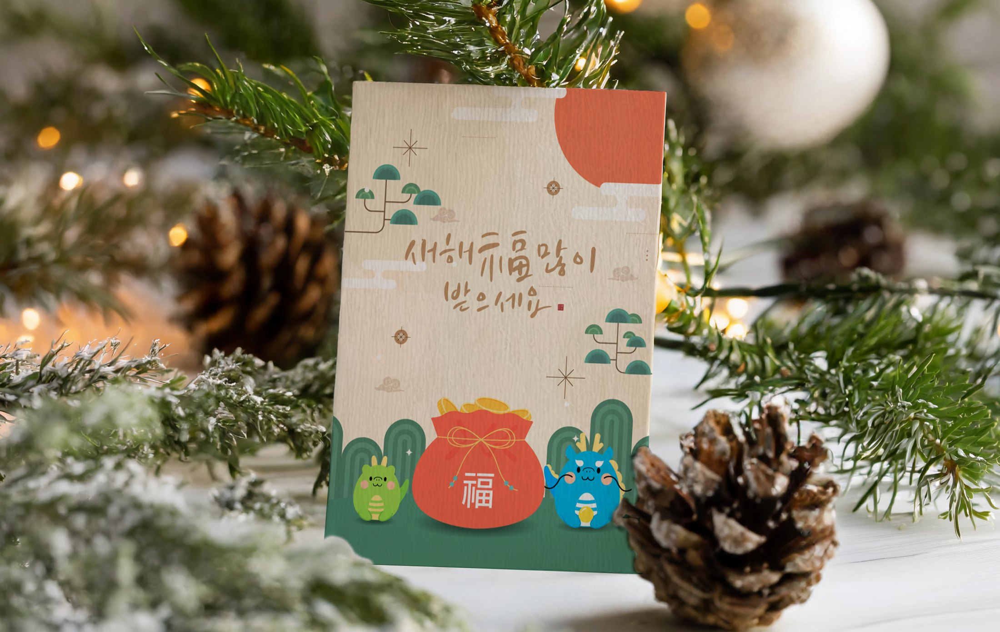
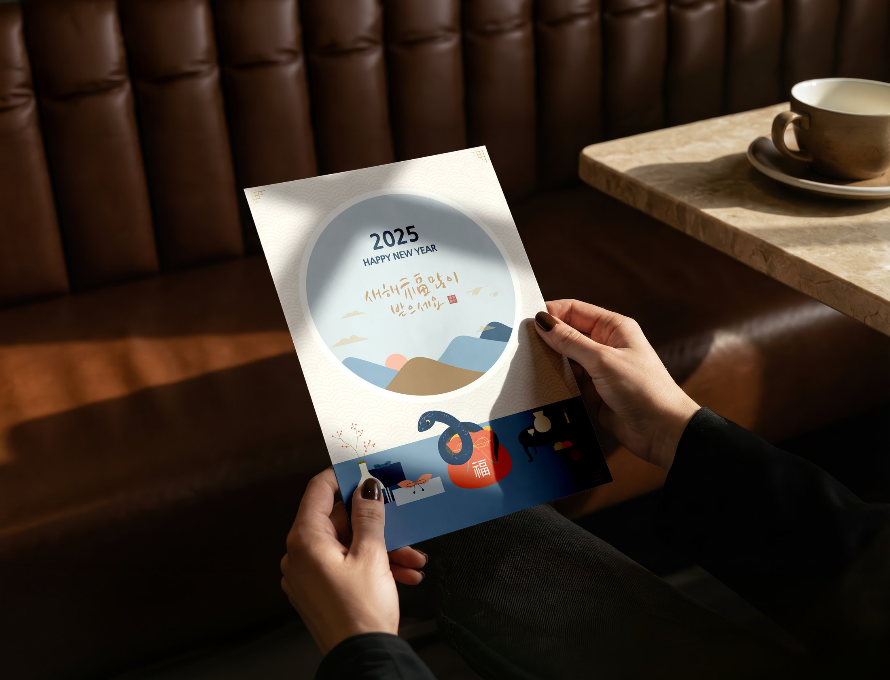
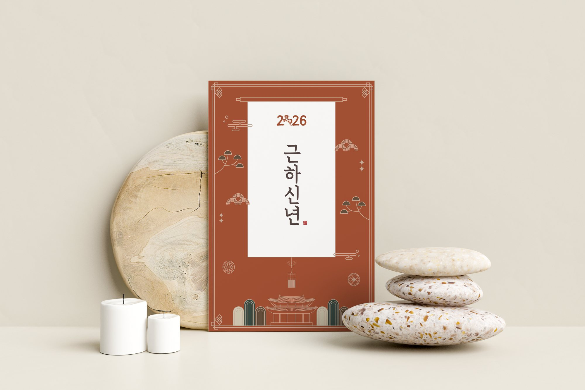